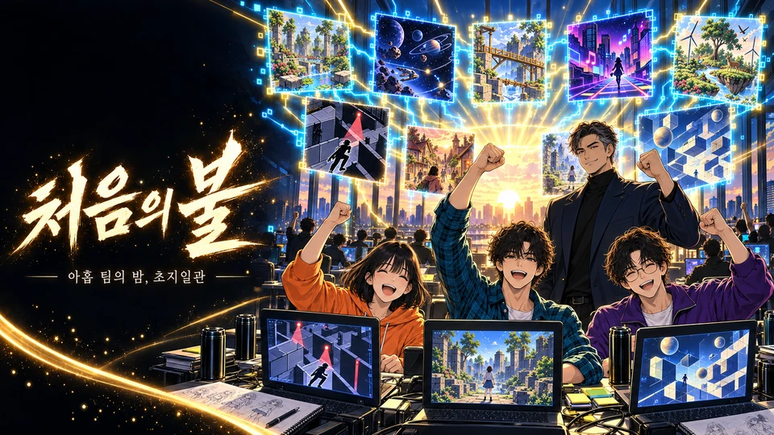
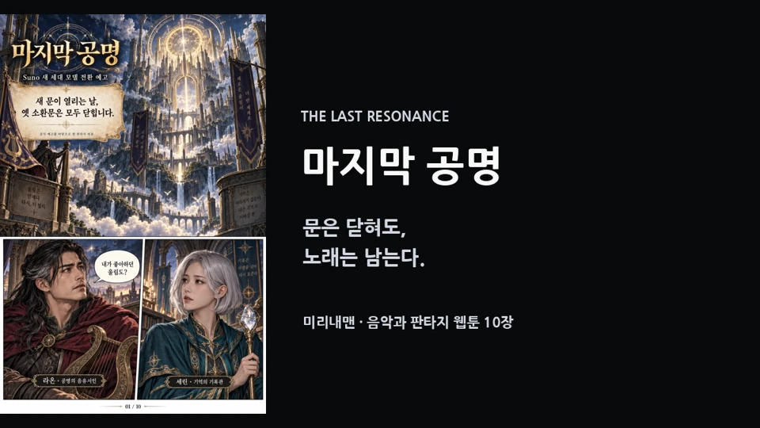
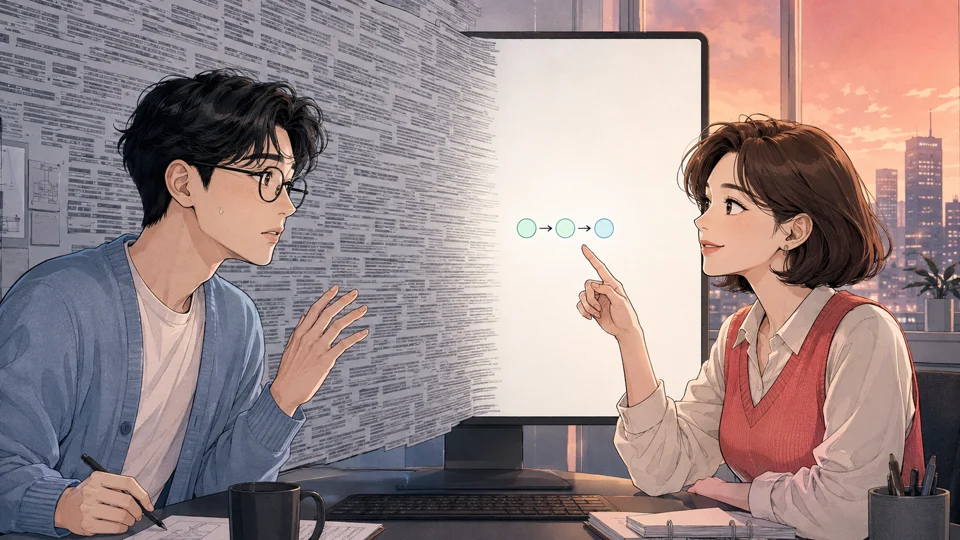

말에 몸을 입히다
미디어는 메시지의 몸이며, 함축·여백·전환은 같은 말에 서로 다른 마음을 드러낸다.
작품 열기Open body
교수 · 저자 · 창작자 · 시스템 설계자Professor · Author · Creator · System Designer
AI에게 판단을 맡기지 않고,AI와 함께 메시지의 몸을 만드는 사람.I do not hand judgment to AI.I work with AI to give messages a body.
미디어융합 전공 공학박사 김준호는 음악, 영상, 출판, 제품, 연구와 사회적 가치를 하나의 인과관계로 연결합니다.Joonho Kim, Ph.D. in media convergence, connects music, video, publishing, products, research, and social value through one causal body.
미디어는 메시지의 몸이다.Media is the body of the message.
홈은 모든 내용을 쌓아놓는 곳이 아니라 각 관계로 들어가는 문입니다.The home page is a set of doors into distinct relationships, not a pile of every detail.
만드는 행위가 어떤 관계와 태도를 갖는지 보여줍니다.How acts of making embody relation and attitude.
생각과 주장이 기록과 증거의 몸을 갖습니다.Ideas and claims take on bodies of record and evidence.
기술과 창작이 나눔의 거리를 줄입니다.Technology and creation shorten the distance to sharing.
판단의 기준과 최종 책임이 한 사람의 태도를 드러냅니다.Criteria for judgment and final responsibility reveal the person behind the work.
노래, 슬라이드, 화면과 이야기가 배포로 끝나지 않고 다음 창작을 바꾸는 기억으로 축적됩니다.Songs, slides, screens, and stories accumulate as memory that changes the next creation.
미디어는 메시지의 몸이며, 함축·여백·전환은 같은 말에 서로 다른 마음을 드러낸다.
작품 열기Open body
처음 품은 의도가 게임이라는 미디어의 몸을 얻었다면, 그것 자체가 성공이다.
작품 열기Open body
문은 닫혀도, 노래는 남는다.
작품 열기Open body
긴 설명 대신 상황에 맞는 가장 작은 그림 하나가 사람과 코드를 다시 통하게 한다.
작품 열기Open body
제주에서 맛본 한 끼의 놀라움이 노래와 미디어의 몸으로 다시 살아난다.
작품 열기Open body긴 문맥과 다른 계산법을 노래의 시간과 웹툰의 선택된 시간으로 번역한다.
작품 열기Open body